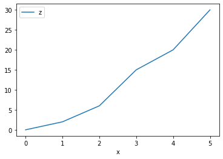
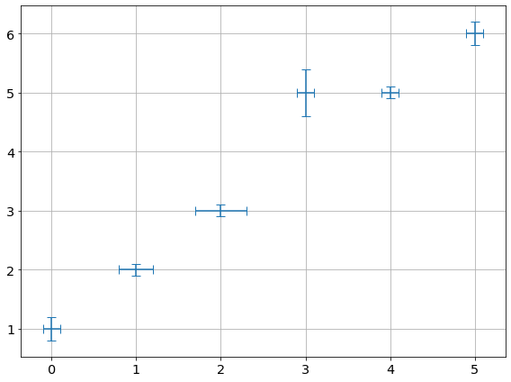
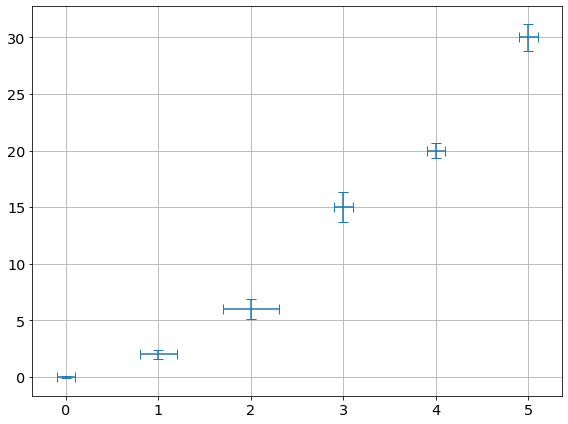

pandas¶
see: https://pandas.pydata.org/pandas-docs/stable/
[1]:
import pandas as pd
Read¶
[2]:
data = pd.read_csv('test_linear_data.txt',delimiter=" ")
data
[2]:
| x | y | dx | dy | |
|---|---|---|---|---|
| 0 | 0 | 1 | 0.1 | 0.2 |
| 1 | 1 | 2 | 0.2 | 0.1 |
| 2 | 2 | 3 | 0.3 | 0.1 |
| 3 | 3 | 5 | 0.1 | 0.4 |
| 4 | 4 | 5 | 0.1 | 0.1 |
| 5 | 5 | 6 | 0.1 | 0.2 |
[3]:
data['z'] = data['x']*data['y']
data
[3]:
| x | y | dx | dy | z | |
|---|---|---|---|---|---|
| 0 | 0 | 1 | 0.1 | 0.2 | 0 |
| 1 | 1 | 2 | 0.2 | 0.1 | 2 |
| 2 | 2 | 3 | 0.3 | 0.1 | 6 |
| 3 | 3 | 5 | 0.1 | 0.4 | 15 |
| 4 | 4 | 5 | 0.1 | 0.1 | 20 |
| 5 | 5 | 6 | 0.1 | 0.2 | 30 |
[4]:
data.plot(x='x',y='z')
[4]:
<AxesSubplot:xlabel='x'>

To Latex¶
[5]:
df = pd.DataFrame({'name': ['Raphael', 'Donatello'],
'mask': ['red', 'purple'],
'weapon': ['sai', 'bo staff']})
print(df.to_latex())
\begin{tabular}{llll}
\toprule
{} & name & mask & weapon \\
\midrule
0 & Raphael & red & sai \\
1 & Donatello & purple & bo staff \\
\bottomrule
\end{tabular}
Needs \usepackage{booktabs}
[ ]:
pandas + uncertainties¶
[6]:
import uncertainties.unumpy as unp
[7]:
rdata = pd.read_csv('test_linear_data.txt',delimiter=" ")
data = pd.DataFrame()
data['x'] = unp.uarray(rdata['x'],rdata['dx'])
data['y'] = unp.uarray(rdata['y'],rdata['dy'])
data['z'] = data['x']*data['y']
data
[7]:
| x | y | z | |
|---|---|---|---|
| 0 | 0.00+/-0.10 | 1.00+/-0.20 | 0.00+/-0.10 |
| 1 | 1.00+/-0.20 | 2.00+/-0.10 | 2.0+/-0.4 |
| 2 | 2.00+/-0.30 | 3.00+/-0.10 | 6.0+/-0.9 |
| 3 | 3.00+/-0.10 | 5.0+/-0.4 | 15.0+/-1.3 |
| 4 | 4.00+/-0.10 | 5.00+/-0.10 | 20.0+/-0.6 |
| 5 | 5.00+/-0.10 | 6.00+/-0.20 | 30.0+/-1.2 |
[8]:
print(data.to_latex())
\begin{tabular}{llll}
\toprule
{} & x & y & z \\
\midrule
0 & 0.00+/-0.10 & 1.00+/-0.20 & 0.00+/-0.10 \\
1 & 1.00+/-0.20 & 2.00+/-0.10 & 2.0+/-0.4 \\
2 & 2.00+/-0.30 & 3.00+/-0.10 & 6.0+/-0.9 \\
3 & 3.00+/-0.10 & 5.0+/-0.4 & 15.0+/-1.3 \\
4 & 4.00+/-0.10 & 5.00+/-0.10 & 20.0+/-0.6 \\
5 & 5.00+/-0.10 & 6.00+/-0.20 & 30.0+/-1.2 \\
\bottomrule
\end{tabular}
[ ]:
pandas + plot¶
[9]:
from smpl import plot
plot.data(data['x'],data['y'])
plot.data(data['x'],data['z'])


[ ]: